SUB · Sistema Único Bibliotecário
Manual de uso
Guia das telas do SUB para quem trabalha na biblioteca: do primeiro acesso ao empréstimo, à devolução, aos relatórios e às configurações.
Regras que o sistema aplica
- 7 dias
- Prazo padrão de devolução. Para professores, a data é escolhida livremente.
- 14 dias
- Máximo de cada prorrogação de prazo.
- 6 a 25
- Caracteres da senha das bibliotecárias.
- Ctrl + R
- Abre o empréstimo rápido a partir do Início.
- Enter
- Faz a pesquisa no Acervo, em Devoluções e em Relatórios.
- 1366 × 768
- Menor resolução recomendada. Nela, campos e botões aparecem sem cortes.
Os números laranja nas imagens correspondem às explicações logo abaixo de cada tela.
Primeiro uso
Na primeira vez que o SUB é aberto em um computador, um assistente de três etapas prepara a instalação. Ele não aparece de novo depois de concluído.
Etapa 1 · Instituição e tema
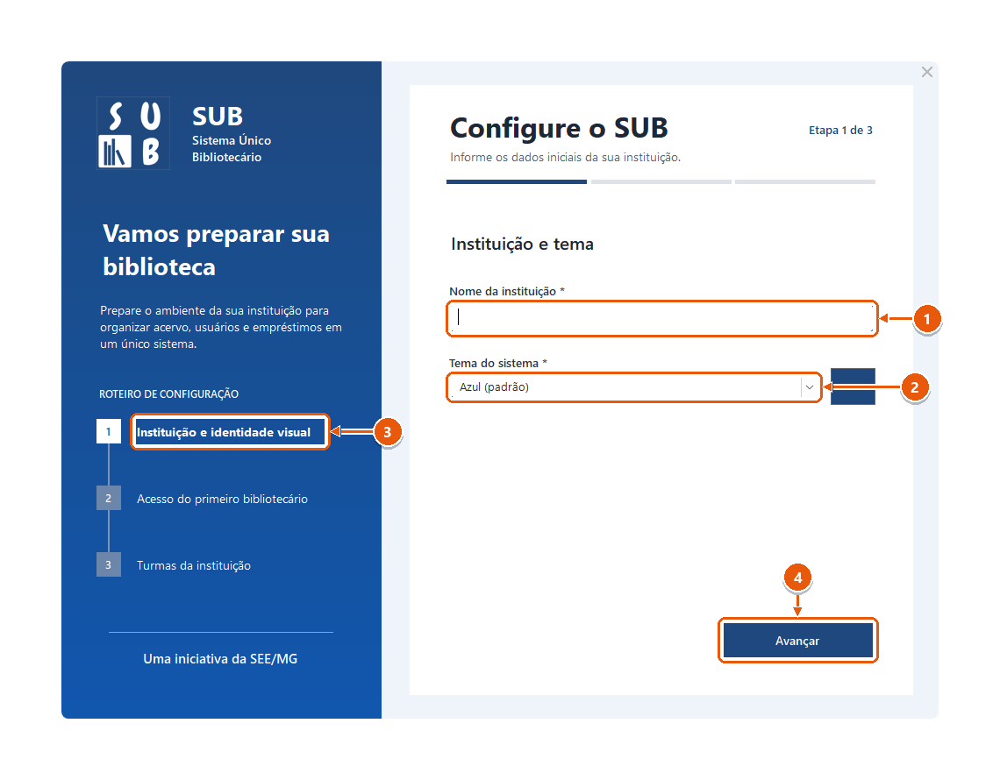
- Nome da instituição. Aparece no login, no menu e nos documentos gerados.
- Tema do sistema. Cor principal usada em todo o SUB. O quadrado ao lado mostra a cor escolhida.
- Roteiro de configuração. Mostra em qual das três etapas você está.
- Avançar para a próxima etapa.
Etapa 2 · Acesso da primeira bibliotecária
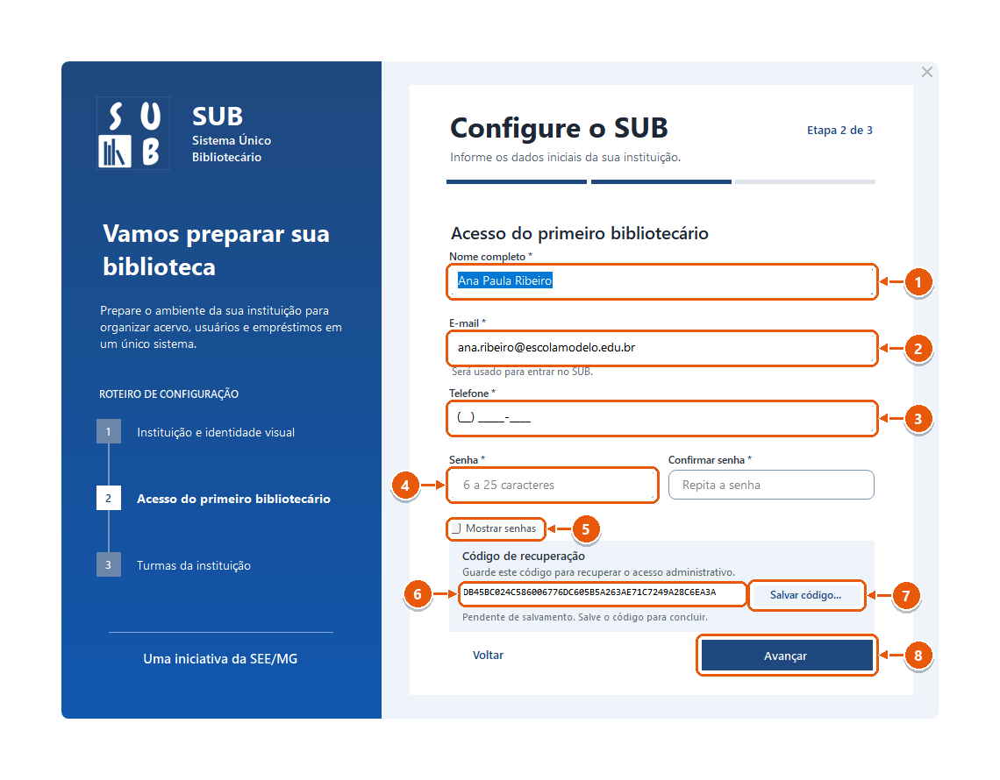
- Nome completo da bibliotecária responsável.
- E-mail. É o que ela vai digitar para entrar no SUB.
- Telefone de contato.
- Senha e confirmação, com 6 a 25 caracteres.
- Mostrar senhas para conferir o que foi digitado.
- Código de recuperação. Gerado pelo sistema. É a única forma de recuperar o acesso se a senha for esquecida.
- Salvar código. Grava o código em um arquivo TXT. Guarde esse arquivo fora do computador (pen drive ou e-mail): ele também é exigido para resetar o aplicativo.
- Avançar depois de salvar o código.
Etapa 3 · Turmas
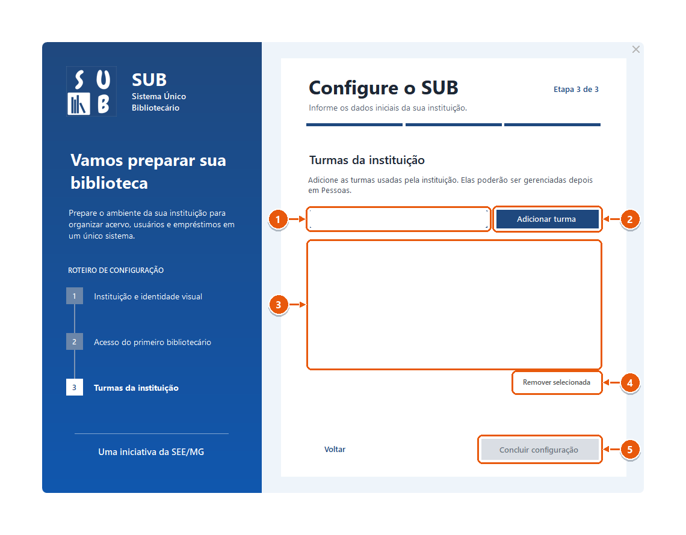
- Nova turma. Digite o nome, por exemplo “6º Ano 1”.
- Adicionar turma inclui o nome na lista.
- Lista de turmas usadas no cadastro de alunos.
- Remover selecionada tira da lista a turma marcada.
- Concluir configuração termina o assistente. As turmas podem ser alteradas depois em Pessoas.
Entrar no sistema
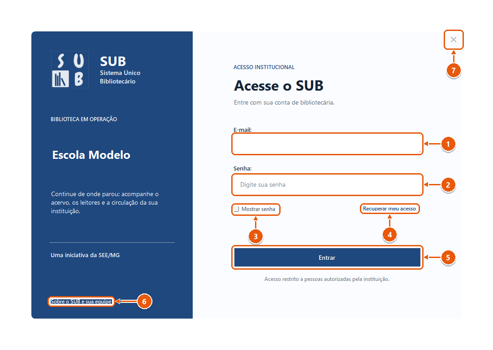
- E-mail da bibliotecária.
- Senha.
- Mostrar senha exibe o que foi digitado.
- Recuperar meu acesso, para quem esqueceu a senha (veja abaixo).
- Entrar. A tecla Enter também funciona.
- Sobre o SUB e sua equipe abre a tela de informações do sistema.
- Fechar encerra o aplicativo, depois de uma confirmação.
Recuperar acesso
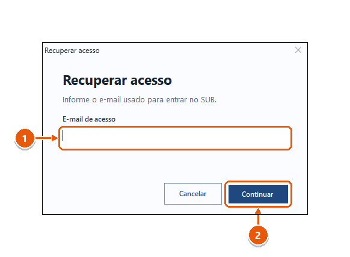
- E-mail de acesso da bibliotecária.
- Continuar. Em seguida o SUB pede o código de recuperação (o do arquivo TXT salvo no primeiro uso) e a nova senha, com 6 a 25 caracteres.
Sobre o SUB
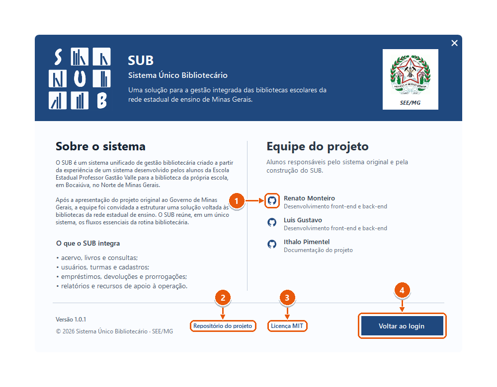
- Ícones da equipe abrem o perfil de cada integrante no GitHub.
- Repositório do projeto abre o código-fonte do SUB.
- Licença MIT mostra a licença de uso.
- Voltar ao login.
Pessoas
Consultar usuários
Menu: Pessoas › Consultar usuários
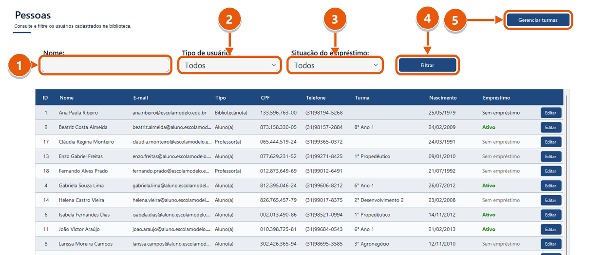
- Nome. A lista filtra enquanto você digita.
- Tipo de usuário: aluno, professor, bibliotecária ou outros.
- Situação do empréstimo: sem empréstimo, ativo ou atrasado.
- Filtrar aplica os filtros. O botão Editar, no fim de cada linha, abre o cadastro da pessoa.
- Gerenciar turmas abre a lista de turmas da instituição.
Cadastrar pessoa
Menu: Pessoas › Cadastrar usuário
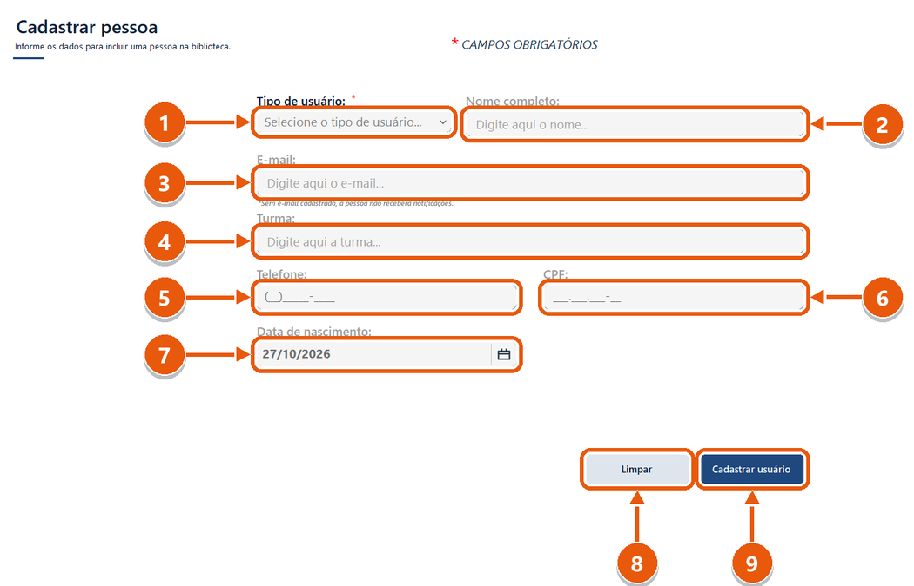
- Tipo de usuário. Escolha primeiro: os demais campos são liberados conforme o tipo. Para bibliotecária, aparecem também os campos de senha.
- Nome completo.
- E-mail. Opcional: sem ele a pessoa não recebe notificações.
- Turma do aluno. Ao digitar, o SUB sugere as turmas cadastradas.
- Telefone do aluno ou responsável.
- CPF.
- Data de nascimento. Clique no calendário para escolher.
- Limpar apaga o formulário.
- Cadastrar usuário salva. Os campos com asterisco vermelho são obrigatórios.
Editar pessoa
Menu: Pessoas › Editar usuário, ou o botão Editar na consulta
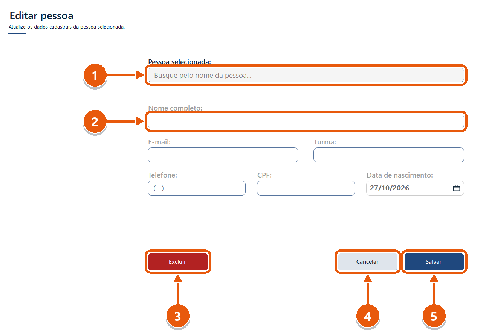
- Pessoa selecionada. Digite o nome e escolha na lista de sugestões.
- Dados da pessoa. Ficam liberados para edição depois da escolha.
- Excluir remove o cadastro.
- Cancelar descarta as alterações.
- Salvar grava as alterações.
Gerenciar turmas
Botão Gerenciar turmas em Consultar usuários
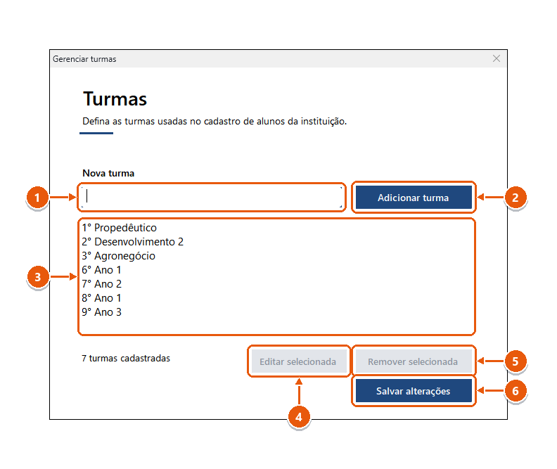
- Nova turma. Digite o nome.
- Adicionar turma inclui na lista.
- Turmas cadastradas. Clique em uma para selecioná-la.
- Editar selecionada renomeia a turma marcada.
- Remover selecionada.
- Salvar alterações grava a lista. Nada muda até clicar aqui.
Acervo
Consultar acervo
Menu: Acervo › Consultar acervo
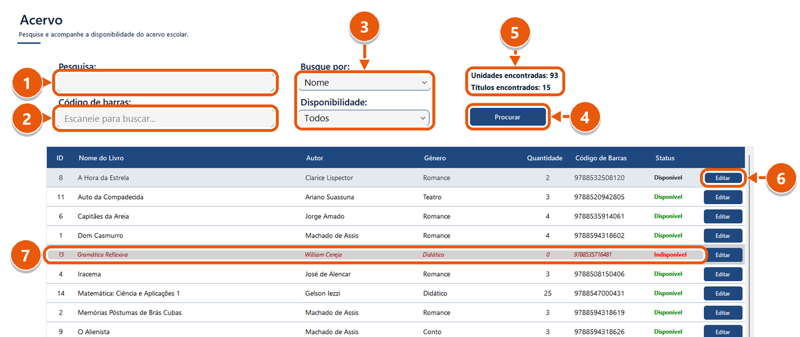
- Pesquisa por texto. Tecle Enter para procurar.
- Código de barras. Clique no campo e passe o leitor no livro; a busca é feita na hora.
- Busque por nome, autor ou gênero, e Disponibilidade: todos, disponíveis ou indisponíveis.
- Procurar aplica a pesquisa.
- Contadores de exemplares (unidades) e de títulos encontrados.
- Editar abre o cadastro do livro.
- Livro indisponível: linha em cinza e itálico, quando não há exemplares livres.
Editar livro
Botão Editar na consulta do acervo
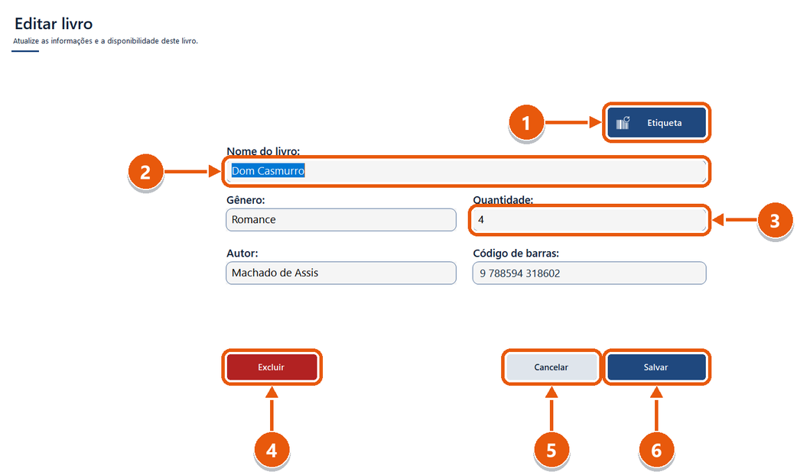
- Etiqueta gera as etiquetas com código de barras do livro.
- Nome do livro e os demais dados.
- Quantidade de exemplares no acervo.
- Excluir o livro.
- Cancelar sem salvar.
- Salvar.
Gerar etiquetas
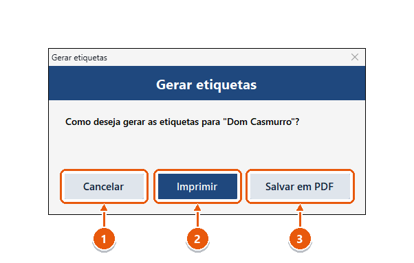
- Cancelar, ou a tecla Esc.
- Imprimir direto na impressora.
- Salvar em PDF para imprimir depois.
Cadastrar livro
Menu: Acervo › Cadastrar livro
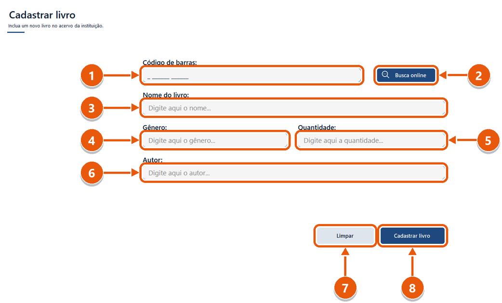
- Código de barras (ISBN-13) do livro. Pode ser lido com o leitor.
- Busca online preenche nome, gênero e autor a partir do ISBN. Se o livro não for encontrado, preencha à mão.
- Nome do livro.
- Gênero.
- Quantidade de exemplares.
- Autor.
- Limpar o formulário.
- Cadastrar livro.
Empréstimos
Registrar empréstimo
Menu: Acervo › Registrar empréstimo
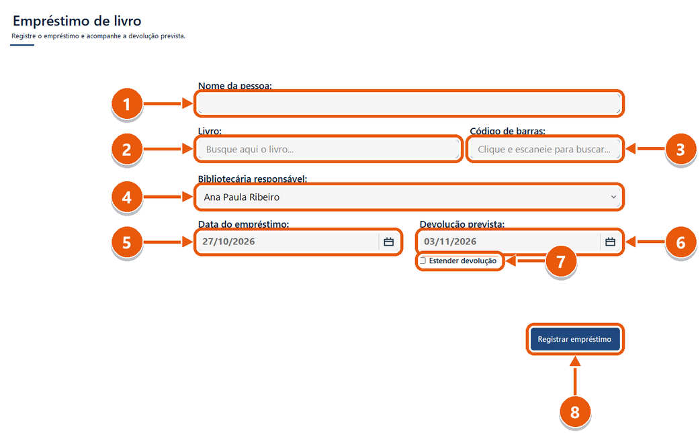
- Nome da pessoa. Digite e escolha na lista de sugestões.
- Livro. Digite e escolha na lista.
- Código de barras. Alternativa ao campo Livro: clique e passe o leitor.
- Bibliotecária responsável pelo empréstimo.
- Data do empréstimo, preenchida com o dia de hoje.
- Devolução prevista. O prazo padrão é de 7 dias. Para professores, a data pode ser escolhida livremente.
- Estender devolução libera a escolha de outra data para os demais leitores.
- Registrar empréstimo.
Empréstimo rápido
Menu: Acervo › Empréstimo rápido, o botão do Início ou Ctrl + R
Feito para os livros didáticos que o professor leva para a sala e devolve no mesmo dia, em quantidade.
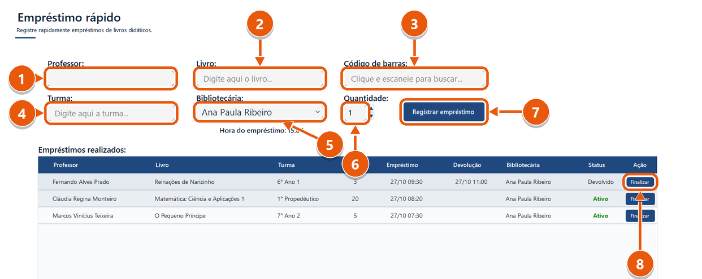
- Professor.
- Livro.
- Código de barras do livro, pelo leitor.
- Turma que vai usar os livros.
- Bibliotecária. A hora do empréstimo é registrada sozinha.
- Quantidade de exemplares. As setas ao lado aumentam ou diminuem.
- Registrar empréstimo. O registro entra na lista de empréstimos realizados da semana.
- Finalizar abre a devolução daquele empréstimo.
Devolver livro didático
Botão Finalizar no empréstimo rápido
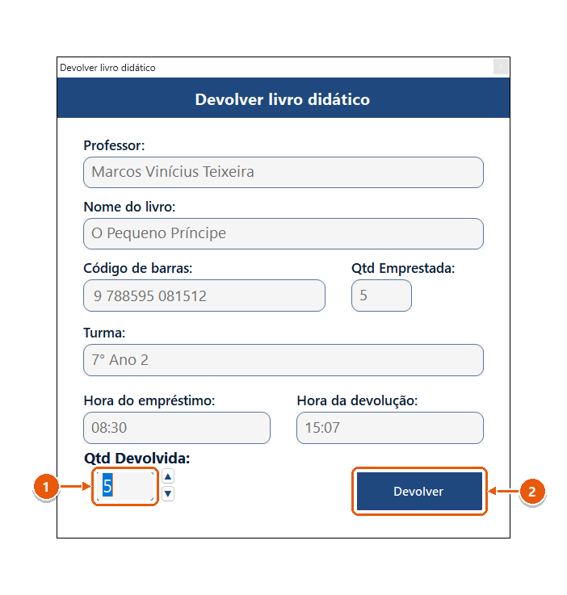
- Qtd devolvida. Já vem com a quantidade emprestada. Ajuste se nem todos voltaram.
- Devolver, ou Enter, registra a devolução com a hora atual. Esc fecha sem devolver.
Devoluções
Menu: Acervo › Registrar devolução
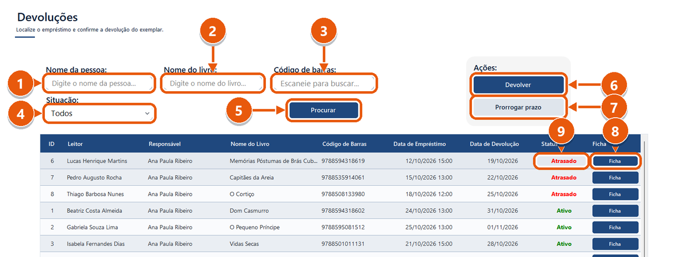
- Nome da pessoa.
- Nome do livro. Nos dois campos de nome, Enter faz a busca.
- Código de barras, pelo leitor; a busca é feita na hora.
- Situação: todos, ativos, atrasados ou devolvidos.
- Procurar aplica os filtros.
- Devolver registra a devolução do empréstimo selecionado na lista.
- Prorrogar prazo do empréstimo selecionado.
- Ficha mostra os dados de contato do leitor.
- Status: em vermelho os atrasados, em verde os ativos e em cinza os já devolvidos.
Prorrogar empréstimo
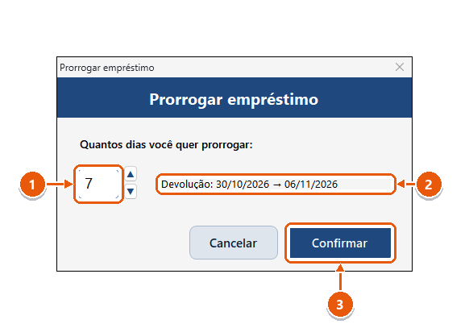
- Dias de prorrogação, até 14. Use as setas ou digite.
- Nova data de devolução, calculada na hora.
- Confirmar, ou Enter. Esc cancela.
Ficha do aluno
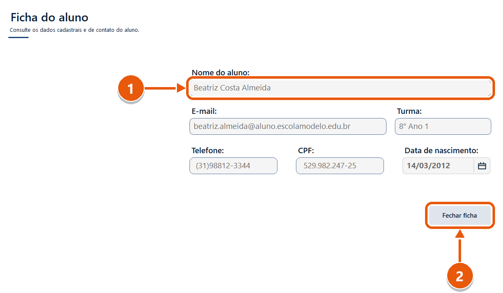
- Dados do leitor: nome, e-mail, turma, telefone, CPF e data de nascimento. A ficha é só para consulta.
- Fechar ficha volta para Devoluções.
Relatórios
Menu: Relatórios
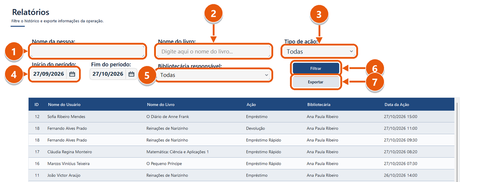
- Nome da pessoa.
- Nome do livro. Nos dois campos, Enter filtra.
- Tipo de ação: empréstimo, devolução, empréstimo rápido ou prorrogação.
- Período, com data de início e de fim. Por padrão, os últimos 30 dias.
- Bibliotecária responsável.
- Filtrar mostra o histórico na tabela.
- Exportar salva o resultado como planilha do Excel (.xlsx).
Configurações
Menu: Configuração
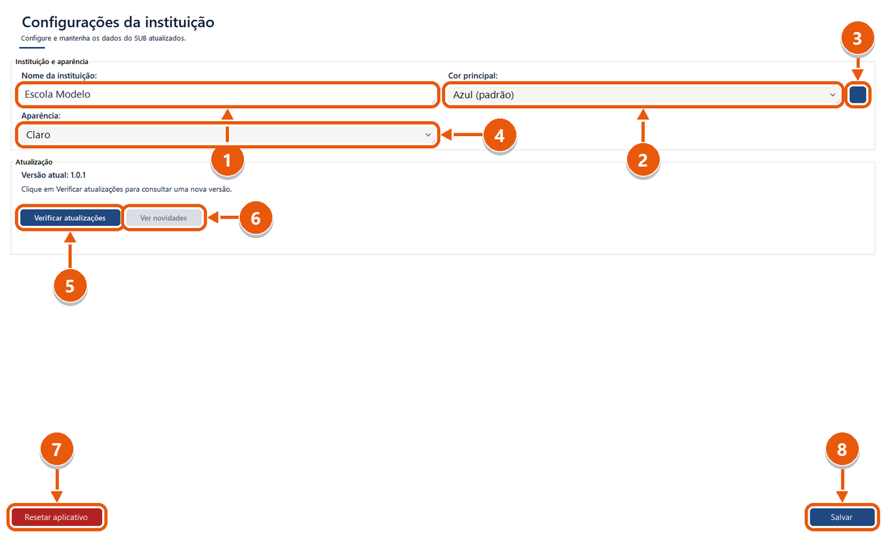
- Nome da instituição.
- Cor principal do sistema.
- Prévia da cor escolhida.
- Aparência: Claro ou Escuro. Vale para todas as telas, inclusive o login, e é aplicada assim que você salva.
- Verificar atualizações consulta se há uma versão nova do SUB.
- Ver novidades da versão instalada.
- Resetar aplicativo apaga todos os dados desta instalação (veja abaixo).
- Salvar. O SUB pede a senha da bibliotecária para confirmar.
Confirmação de senha
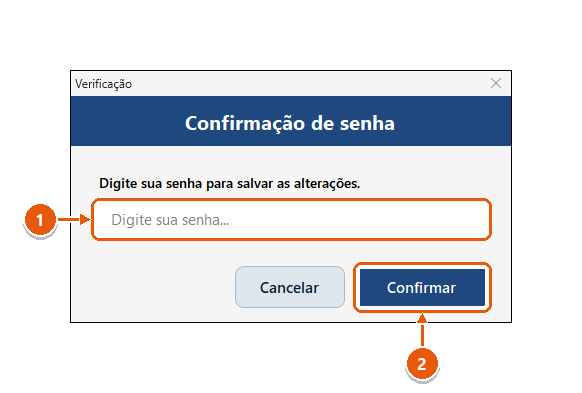
- Senha de quem está usando o sistema.
- Confirmar, ou Enter, grava as alterações. Esc cancela.
Resetar aplicativo
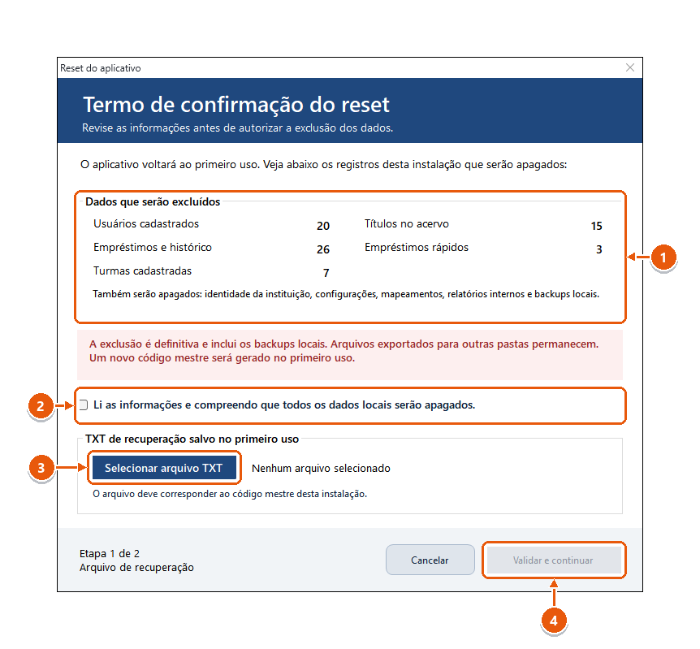
- Dados que serão excluídos, com a contagem desta instalação.
- Li as informações… Marque para confirmar que entendeu.
- Selecionar arquivo TXT de recuperação salvo no primeiro uso.
- Validar e continuar, liberado só com a caixa marcada e o arquivo correto.
Atenção: o reset é definitivo e apaga também os backups locais. Arquivos exportados para outras pastas, como relatórios e PDFs, continuam onde estão.
Mapeamento anual de turmas
No início de cada ano, quando o mapeamento está pendente, o SUB oferece este assistente para passar os alunos para a turma seguinte. Ele sugere a próxima turma de cada uma; você confirma ou ajusta. Em telas menores, a janela se ajusta para os botões continuarem visíveis.
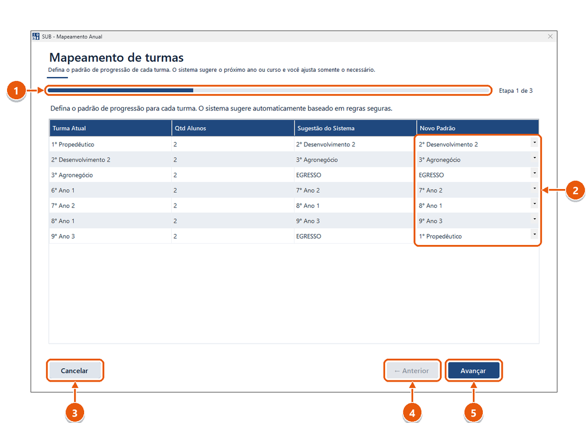
- Progresso do assistente, em três etapas.
- Novo padrão. Clique na célula para escolher para qual turma os alunos vão. “EGRESSO” marca quem está saindo da escola.
- Cancelar sem aplicar mudanças.
- Anterior volta uma etapa.
- Avançar para a próxima etapa.
Atalhos de teclado
Para quem usa o leitor de código de barras ou prefere o teclado.
| Tecla | Onde | O que faz |
|---|---|---|
| Enter | Acervo, Devoluções e Relatórios | Faz a pesquisa com o que foi digitado. Com a lista de sugestões aberta, escolhe a sugestão. |
| Enter | Campos de código de barras do Acervo e de Devoluções | Busca pelo código lido. O leitor envia o Enter sozinho. |
| Enter | Login, prorrogação, confirmação de senha e devolução de livro didático | Confirma. |
| Esc | Prorrogação, confirmação de senha, etiquetas, devolução de livro didático, recuperação de acesso e termo de reset | Fecha a janela sem fazer nada. |
| Ctrl + R | Início | Abre o empréstimo rápido. |
| ↓ ↑ | Listas de sugestão de Devoluções e Relatórios | Percorre as sugestões. |